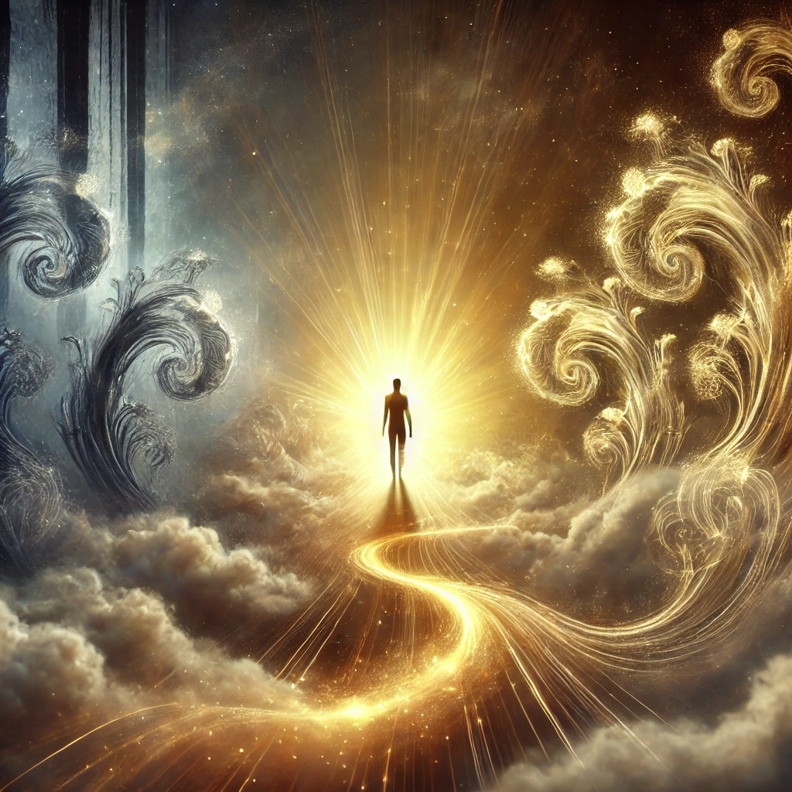

You take a deep breath and step forward, your resolve unshaken. The shadows twist and writhe, their forms shifting between chaos and solidity. You raise your hand, focusing your energy, and speak with clarity:
“You are a part of me, but you do not control me. Together, we can become something greater.”
The shadows pause, their glowing eyes flickering with uncertainty. Slowly, they begin to soften, their edges dissolving into tendrils of light. The swirling darkness transforms, merging with the golden light radiating from within you. The weight you once felt lifts, replaced by a sense of balance and integration.
“By transforming your fear, you gain its strength,” a voice whispers within. “By embracing your shadows, you become whole.”

The transformation complete, you feel empowered. The path ahead becomes clear, and new choices present themselves: